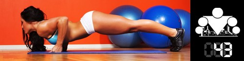

!!! TODAY WE ADD ONE CIRCUIT !!!
!!! TODAY WE ADD ONE CIRCUIT !!!
The last week of our BASIC block is here! The equator is just around the corner, but before we move on, let's recap the infoposts of the last 7 days. In that time we learned: that understanding matters much more than simple repeating, that body type is not dogma and genetics is not a sentence, that how we look depends a lot on body-fat %, that many people still believe myths about strength and cardio training, and that you have to believe in your own strength — then things will work out!
And today we'll talk about something you really should always find time for in your daily schedule!
We don't think we need to talk about how important rest is in general, so we'll say a few words about its importance relative to training. We may be revealing a scary truth to someone, but in reality when you train, you are not making your body stronger — on the contrary, you are breaking it down. A good workout creates a stress situation in which your body has to mobilize its strength to handle it.
Let's talk about your muscles specifically. When they meet a load bigger than the one they're used to, microtears happen in them. During rest after training, your body repairs those microtears. But if you don't give yourself enough rest, each following session will not only fail to make you stronger — it will make you weaker than you were before it!
If by rest we mean the stretch of time between your workouts, all rest can be split into two categories: active and passive.
Active rest. If you're a fairly active person in life and it's hard for you to sit still, then your rest between sessions probably already belongs to the active category. If you decide to ride a bike, play football with friends, or go to a climbing gym — those are all kinds of active rest. The main difference between active rest and training is that you don't push your muscles to the limit. You're active, you move, but your body is used to that load and doesn't treat it as stress.
Passive rest. This category includes everything that isn't tied to an active kind of rest. Watching a movie in a cinema, reading books, going to school/work, and things like that. Beginners usually find it very hard to stay in a training schedule, because they constantly want to train and train, but you should understand that the body absolutely needs (!) time to recover. And that time can be filled with other useful things that aren't related to training.
As for which of the two kinds of rest is better, here, as always, it's very individual and depends on a pile of other factors that make up your life. Online you can find a huge amount of information about how muscles need this much time to recover, that you shouldn't train more often than every other day, that only people who take some special supplements can train every day, and so on. We always give the same recommendation — go by how you feel. The job of SOTKA participants is to learn to listen to their body and understand it. Because nobody will know them better than they know themselves, which means all those recommendations from the internet are, at best, general.
Our training program is built so that participants have time to recover within a day. That happens because, despite the significant training volume, we never take sets to failure. In the ADVANCED block there will be quite a few infoposts, including ones about different training approaches that will be much harder and more intense, and after which you may need several days of rest. But in any case, as we already wrote above — this question is individual.
IMPORTANT announcement! At the end of this week we have testing of your new maxes in the exercises planned, so be ready to dedicate day 49 to exactly that. You can give yourself a rest or do a lighter session the day before, so you're fresh and full of energy.
If for some reason you're behind the main rhythm, we set aside a WEEK for entering your new maxes into the general stats, so don't worry.